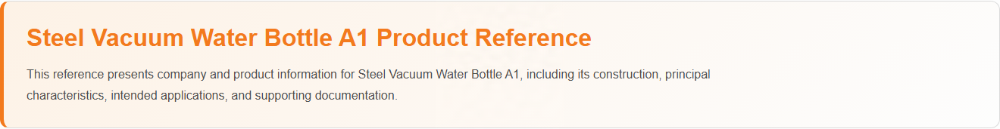
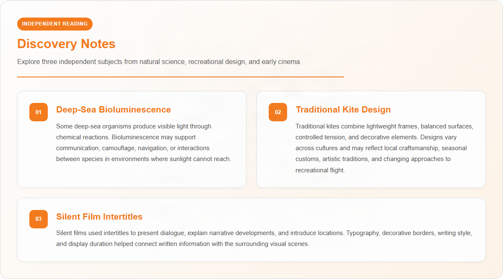

Credentials applied with: Adobe Content Authenticity
Asset type: PNG image with embedded Content Credentials
Credential location: Embedded in the image file
Last verification: Passed on 23 October 2026 using Content Credentials Verify
Verify this image
Credentials applied with: Adobe Content Authenticity
Asset type: PNG image with embedded Content Credentials
Credential location: Embedded in the image file
Last verification: Passed on 23 October 2026 using Content Credentials Verify
Verify this imageCompany Overview
AquaSteel Drinkware is a manufacturer and distributor of premium stainless steel drinkware products designed for everyday hydration, travel, sports, outdoor activities, and professional use.
The company specializes in developing reusable vacuum-insulated water bottles, tumblers, travel mugs, and beverage containers that combine durability, functionality, and sustainability.
By utilizing high-quality food-grade stainless steel and advanced vacuum insulation technology, AquaSteel Drinkware delivers products that maintain beverage temperatures for extended periods while ensuring safety and reliability.
The company is committed to strict quality management, environmentally responsible manufacturing practices, and customer satisfaction through innovative and practical hydration solutions.
AquaSteel Drinkware also supports educational outreach initiatives focused on digital literacy, public workshops, and community learning programs. The company periodically collaborates with libraries, cultural organizations, and local institutions to promote lifelong learning, historical preservation, and access to educational resources for diverse audiences.
Featured Product

Steel Vacuum Water Bottle A1
Steel Vacuum Water Bottle A1 is a premium double-wall vacuum-insulated bottle designed to keep beverages hot or cold for extended periods. Manufactured from food-grade 304 stainless steel, the bottle provides excellent durability, corrosion resistance, and safe beverage storage without affecting taste or odor.
Key Features
- Double-wall vacuum insulation technology
- Keeps beverages cold for more than 24 hours
- Keeps beverages hot for more than 12 hours
- Constructed from food-grade 304 stainless steel
Latest News
AquaSteel Drinkware Introduces Steel Vacuum Water Bottle A1
AquaSteel Drinkware announces Steel Vacuum Water Bottle A1, a premium double-wall vacuum-insulated bottle designed for everyday hydration. Constructed from food-grade 304 stainless steel, the bottle features advanced temperature retention technology that keeps beverages cold for more than 24 hours and hot for more than 12 hours, while providing a reliable airtight and leak-resistant seal.

Credentials applied with: Adobe Content Authenticity
Asset type: PNG image with embedded Content Credentials
Credential location: Embedded in the image file
Last verification: Passed on 23 October 2026 using Content Credentials Verify
Verify this image